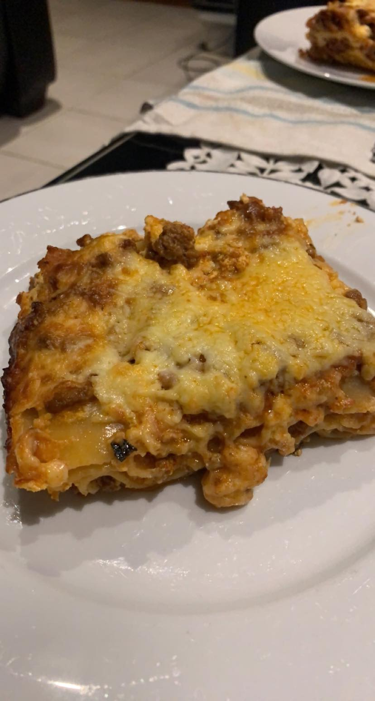

Lasagna

Description
In the image above, is a lasagna I made from scratch based a YouTube video by Joshua Weissman. This lasanga was a hit with my family.
This is the video in question "https://www.youtube.com/watch?v=0Af_M6NFV-k&t=406s"
Ingredients for the sauce
- 9 lasagna noodles
- 450g ground beef
- 340g ground pork
- 2 tablespoons (30g) vegetable oil
- 1 onion, finely diced
- 5 cloves garlic, thinly sliced
- 2 teaspoons finely chopped thyme
- 2 teaspoons fennel seeds, finely ground
- Salt and pepper to taste
- 1 can crushed tomatoes
- 1 can tomato paste
Ingredients for the assembly
- 425g tub of ricotta
- 1 egg
- 225g mozzarella cheese
- 1/3 cup parmesan cheese
Steps for the sauce
- In a dutch oven or heavy pot, heat the oil over medium-high heat until ripping hot.
- Add in the ground meat and sear for 3-4 minutes, flip and repeat on the other side for 2-3 minutes. Mash all the meat together using a potato masher until fine. Transfer to a separate container.
- Add more oil to the pot if needed, add in the finely sliced garlic, and reduce heat to medium. Stirring occasionally until the garlic begins to toast.
- Add in diced yellow onion, season to taste with salt stirring together, and saute until the onions turn translucent.
- Once the onions are translucent, add in fennel powder and stir together. Saute for 30 seconds.
- Add the tomato paste and stir together. Saute until it has caramelized and sticks to the bottom of the pan.
- Stir in a can of crushed tomatoes then add the meat back to the pot and stir until incorporated.
- Simmer and reduce for 5-7 minutes or until slightly thickened. Season to taste with salt and pepper.
Steps for the assembly
- Mix together all cheese ingredients until commbined in a medium bowl.
- Precook pasta noodles until al dente.
- Preheat the oven to 375.
- In a 9x13 add 1 cup sauce, top with 3 noodles, layer 1/3 of cheese mix, another cup of meat sauce, repeat two more times, finish with 3 more noodles on top with more sauce on top and cheese.
- Cover with foil that’s been sprayed with oil, and bake for 25 minutes covered, uncover and bake for 25 more minutes.
- Cool for 15 minutes. Cut and serve.